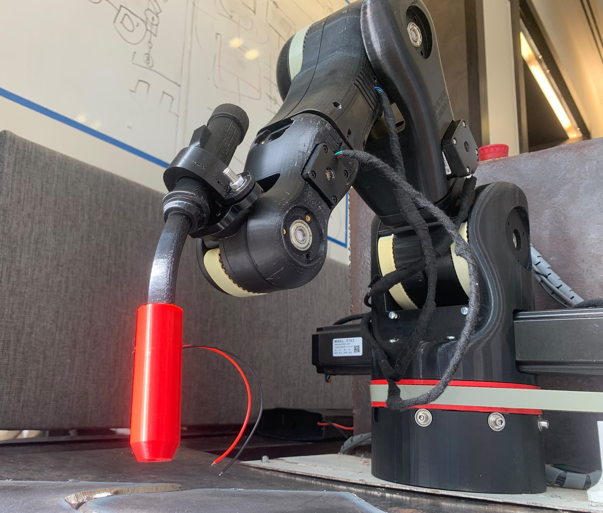
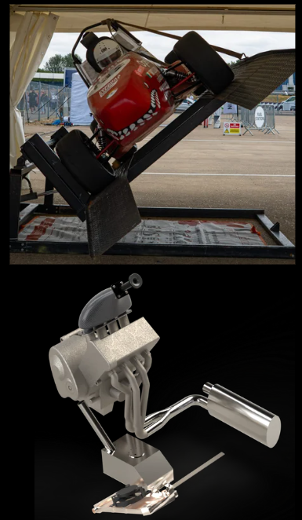
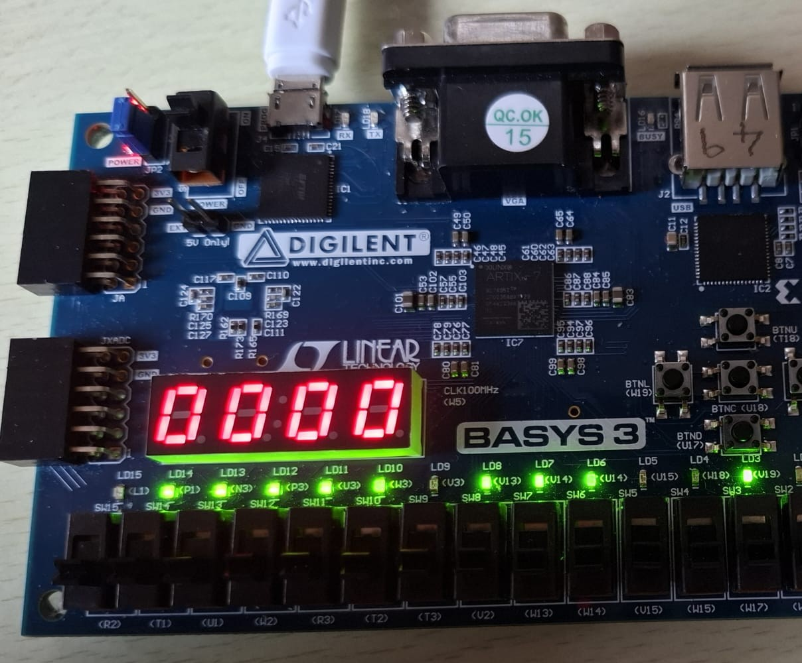
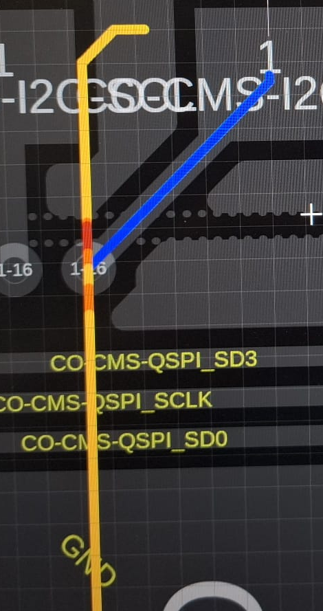
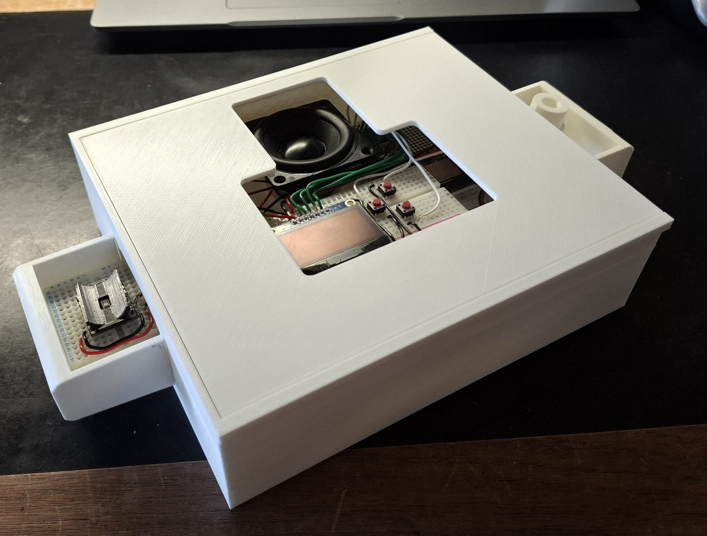
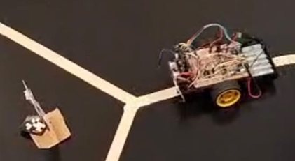

Paula Engineering Portfolio

Welding Robotics 3D vision-integrated robotics system using seam detection to reduce robotic welding programming time. View Project
Powertrain Lead Led the Formula Trinity powertrain department, designing and building five subsystems in one year. View Project
FPGA Sequence detector using a finite state machine and 24-bit LFSR. View Project
PCB Design Hardware development internship for logistics drones. View Project About Me
Find out more about me and the engineering work behind this board.
View Page
About Me
Find out more about me and the engineering work behind this board.
View Page

'Sobriety Suite' Embedded systems project for field sobriety tests. View Project
Autonomous Buggy A buggy that completed three challenges, including PID control and sign recognition. View Project